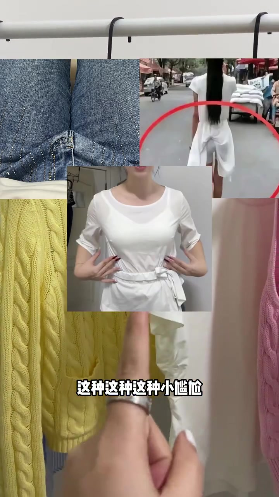
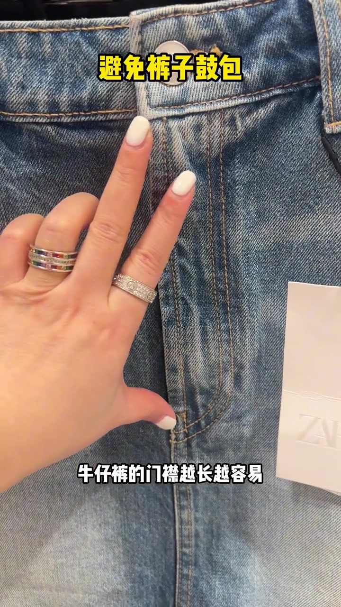
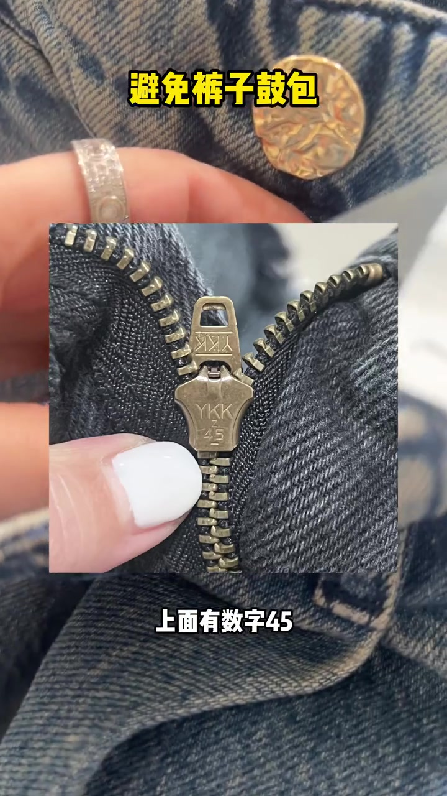
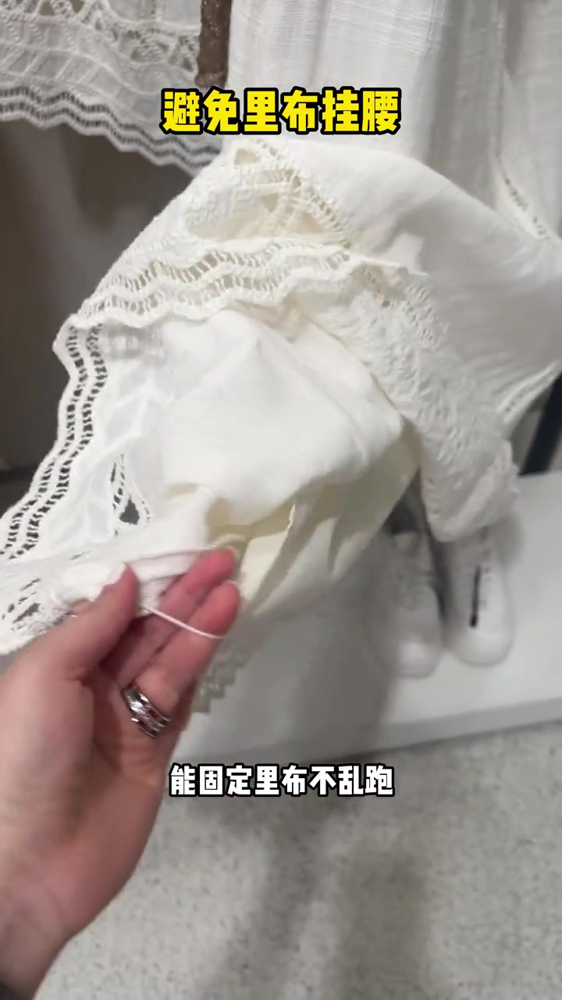
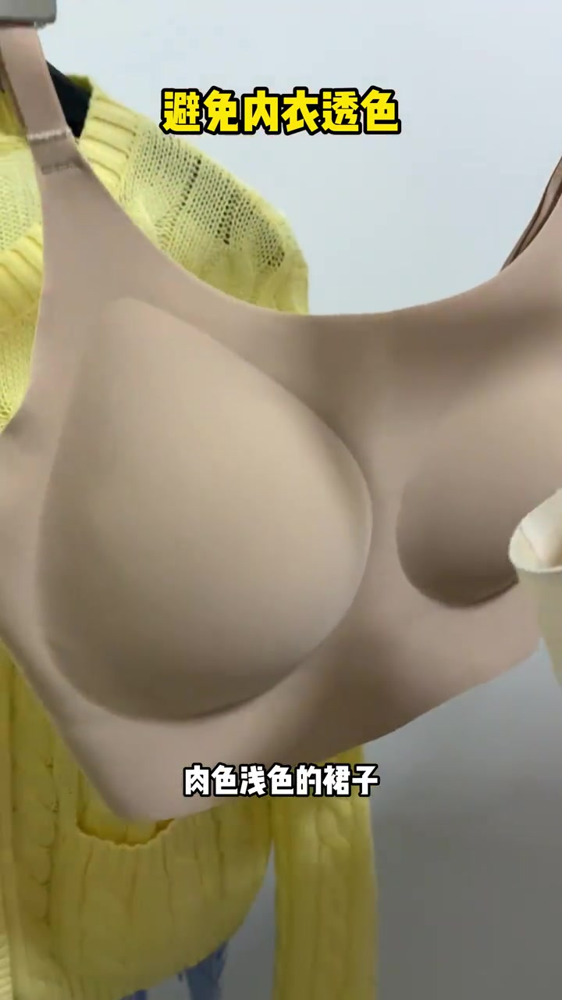
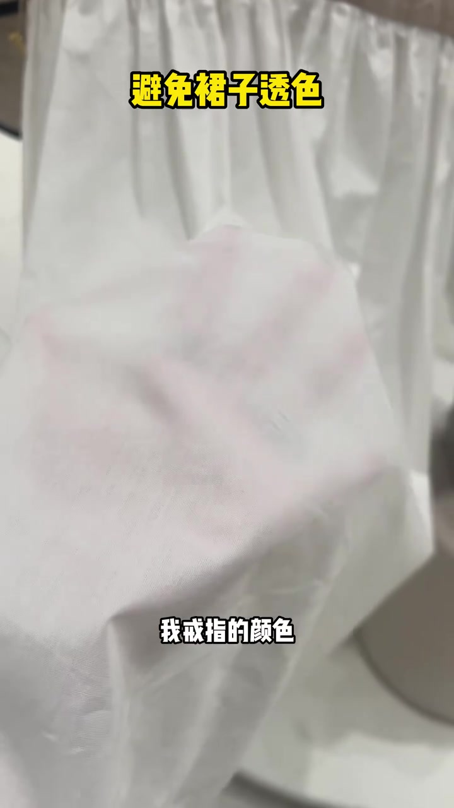
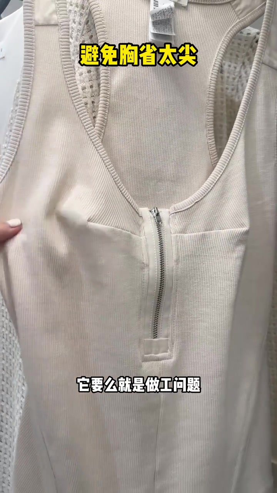
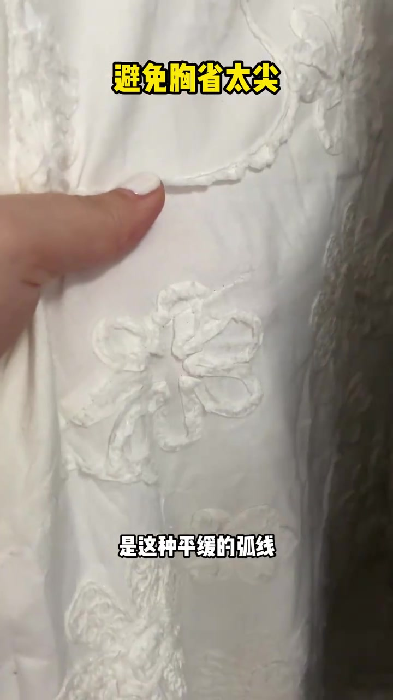

开场：买回来才遇见的小尴尬
主讲人先抛出一连串穿衣“小尴尬”——画面叠着浅色裤透底、牛仔裤门襟鼓包等对照，字幕连打“这种这种这种小尴尬”。语气像在店里跟朋友吐槽：其实买的时候注意几个小细节，这些都可以避免。
可见字幕校正：Whisper 把“门襟/鼓包/里布/胸省/省量”等听成“门筋/古包/礼布/凶嗓/质量”。下文按画面叠字与笔记文案叙述；文末转录区仍完整保留原始分段。

牛仔裤：门襟越长越容易鼓包，翻拉链看 3 号
镜头怼到浅蓝牛仔裤门襟。字幕写“避免裤子鼓包”“牛仔裤的门襟越长越容易”——主讲人比出长度，说坐下后前面容易顶出一大块鼓包，“比男生还男生”。解决办法先选短门襟。
接着把拉链头翻过来：特写里能看到 YKK 滑块上刻着数字 45，她说“这种就是 3 号拉链”，相对细软，不容易在下边顶出硬条。门襟长短与拉链号数被绑在同一条避鼓包逻辑里。


“3 号拉链更不易鼓包”是主讲人的店内经验口吻，不是对所有品牌拉链的实验室结论；现场可核对门襟长度与滑块刻号。
带里布的裙子：中间要有固定小线绊
切到白色蕾丝裙。手指拉起里布与面料之间的一小段线绊（画面叠字“避免里布挂腰”“能固定里布不乱跑”）。主讲人强调：带里布的裙子一定要选里布和面料中间带这种小线绊的，免得上完厕所里布挂在腰上自己却不知道。

透色与曝光：肉色内衣 + 浅色裙必查里布
想避免内衣透色，她举起一件肉色无痕文胸，字幕写“避免内衣透色”——选接近皮肤颜色的肉色。紧接着转向浅色裙子：一定要分开看里面有没有挂好里布。
反例很直观：单层白色面料被手托住，透得连戒指颜色都看得清；字幕写“避免裙子透色”“我戒指的颜色”。她问：那你穿什么颜色的内裤，肯定都会被曝光——所以一定要选带里布的。


胸省太尖：要么做工，要么省量太大
凡是上衣带胸省的，都要格外注意尖尖。镜头先给一件米色罗纹背心：胸前省道收成凸起尖点，字幕写“避免胸省太尖”“它要么就是做工问题”。她补一句：要么就是省量太大了——穿上身后这儿依然尖。
对照是白色绣花面料上的平缓弧线：要选省量比较小、胸省点呈平缓弧线而不是凸起尖尖点的。收尾把“尖尖”从问题指认落到可摸的选衣标准。

